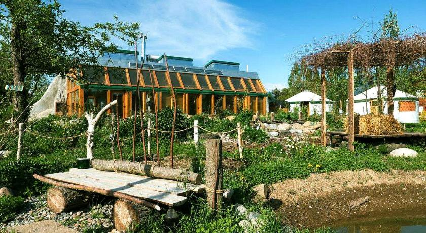

Earthship MCR
Earthship MCR is a project to build an Earthship in Greater Manchester to create a sustainable and eco-friendly house and community garden.
Our goal is to demonstrate an alternative house build made from 50% recycled materials that can also produce food, recycle water and create it's own energy via solar/wind.
What is an Earthship?
An Earthship is a brand of passive solar earth shelter that is made of both natural and upcycled materials such as earth-packed tires, pioneered by architect Michael Reynolds.
Earthships are predicated upon the idea that there are six human needs which can be addressed through environmentally sustainable building design:
- Energy: Thermal and/or solar heating and cooling, solar and wind electricity
- Waste Management: Reuse and recycling built into construction and daily living
- Sewage Treatment: Self-contained sewage treatment and water recycling
- Shelter: Building with natural and recycled materials
- Clean Water: Water harvesting and long term storage
- Food: In-home organic food production capability
Earthship structures are intended to be "off-the-grid-ready" homes, with minimal reliance on public utilities and fossil fuels. They are constructed to use available natural resources, especially energy from the sun and rain water. They are designed with thermal mass construction and natural cross-ventilation to regulate indoor temperature, and the designs are intentionally uncomplicated and mainly single-story, so that people with little building knowledge can construct them.